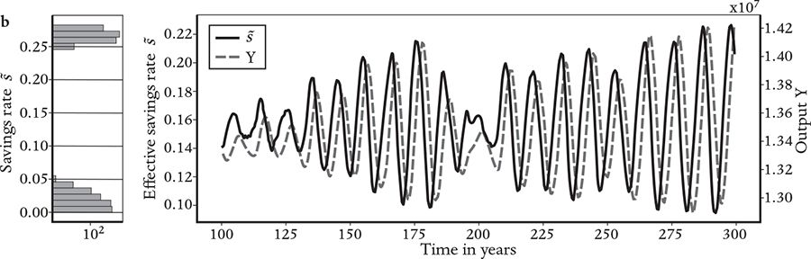

It’s the economy, stupid.
We can now return to the question raised in Chapter 1: What causes the economy to change? Essential measures of the economy, such as GDP, unemployment and inflation, fluctuate from quarter to quarter and year to year and show long-term trends driven by structural changes. These changes have a major impact on our well-being and, as James Carville famously noted, cause governments to rise and fall. Explaining such changes is one of the most important problems in economics. It is an important problem for everyone: The performance of the economy determines whether presidents are elected, and millions of jobs are gained or lost during the course of the business cycle.
Complexity economics and standard economic theory explain change very differently. As discussed in Chapter 1, there are two fundamental causes of economic change: outside influences and factors within the economy itself. With a few exceptions, standard economic models assume that the drivers of change come from outside.1 I will argue that economic change results from a combination of internally and externally driven causes, depending on the context, and discuss how complexity economics provides natural explanations for this.
Let’s begin with a simple example of emergent behavior when we turn a standard model into a complexity-economics model.2 In Chapter 5 we discussed the Solow model and how it was converted into the RCK model, which is a simple micro-founded DSGE model. The RCK model assumes a single rational representative agent who can calculate the optimal savings rate. What happens if we instead enter the wilderness of bounded rationality through the back gate, assuming boundedly rational (very stupid) heterogeneous agents? Does this fundamentally change the behavior described above, and if so, how?
We investigated these questions in a project led by Yuki Asano, whom I met at Oxford in 2017 while supervising his superb master’s thesis in mathematics. He subsequently teamed up with Jobst Heitzig, Jakob Kolb and me to investigate modifications of the RCK model. The goal of Yuki’s model was to illustrate a conceptual point rather than to build a realistic model. We turned the RCK model into a complexity-economics model by replacing the single, utility-maximizing, rational household of the RCK model with thousands of boundedly rational, heterogeneous households. Rather than calculating the optimal savings rate, the households simply copied one another, setting their savings rate using the two simple heuristics mentioned earlier, ‘trial and error’ and ‘imitate the best’. The status-seeking tendency of households to copy one another has been well documented, so these seemed like sensible choices.3
We assumed that the households in Yuki’s model live in a social network.4 The nodes correspond to households, and a link indicates that they are neighbors, meaning they can observe one another’s behavior. As in the original RCK model, each household saves a fraction of its income and consumes the rest. All the households work for the same firm and receive equal wages. In addition, each household contributes capital to run the business; the households pool their capital and invest it in the firm, and each household receives income based on the firm’s profits in addition to its wages, proportional to its investment. As in real life, if a household gets richer it owns more of the means of production than poor households, and its higher investment profits allow it to consume more.
To get started, we randomly assigned each household its own savings rate, consisting of a number between zero (saving nothing) and one (saving everything). As in the RCK model, the households were allowed to adjust their savings rates. To accomplish this, from time to time a random household was allowed to update its savings rate by observing the consumption rates of all its neighbors. It then copied the savings rate of the neighbor who was currently consuming the most, with a small random error (hence using the heuristic of ‘trial and error’).5 In more colloquial terms, each household looks at its neighbors, sees who has the fanciest car and biggest house, knocks on their door and asks them their savings rate, then begins saving at the same rate. Thus the agents in Yuki’s model behaved like short-sighted, profligate consumers who want to ‘keep up with the Joneses’.
A key parameter determining the behavior of the economy in the model is the typical time between updates of the savings rates of each household, which we called the social-interaction time. If the social-interaction time is small the household updates their savings rate frequently, and if it is large they do it only infrequently. When the social-interaction time is short, the economy gets stuck in a poverty trap, where the average savings rate and household consumption are very low. As the social-interaction time increases, the savings rate goes up and everyone gets richer. Remarkably, when the social-interaction time is long enough (meaning that savings rates aren’t frequently updated), the savings rate approaches the golden rule, and the households become almost as rich as they would be if they were all perfectly rational. I say ‘remarkably’ because the agents in Yuki’s model have extremely limited cognitive abilities; all they know how to do is compare consumption rates and select the savings rate of the highest consumer. If the social-interaction time is made even longer, the average savings rate remains near the optimal value. The fact that two simple rules of thumb can result in nearly optimal behavior is a good illustration of the effectiveness of heuristics.
Even more surprising, just as the social-interaction time gets long enough to make the savings rate nearly optimal, the economy suddenly starts to oscillate. The average savings rate and quantities depending on it, such as the output of the economy, make irregular fluctuations that resemble a business cycle, as shown in Figure 9. At the same time, the population spontaneously breaks into rich and poor groups. Households can move between the two groups: When there’s a boom, there are more rich households; when there’s a recession, the number of poor households increases. Interestingly, there is almost no middle class – nearly all households are either rich or poor.
How could such complex collective behavior arise from such simple heuristics? This was not obvious to us at first, and understanding it took considerable effort; emergent phenomena tend to be surprising by their very nature.6 So if you find this hard to understand, you are not alone – it was hard for us too.
The key to the emergent oscillation is that the state in which everyone saves at the golden rule is unstable. Suppose that all households initially use the golden rule and have the same capital, so they have the same consumption. Now consider a household that makes a small copying error that lowers its savings rate. This household will now consume more than the others, causing other households to copy it, and the evolving pressure will drive savings rates further down. But as capital drops and the number of poor households grows, the capital of the remaining thrifty households becomes more valuable, due to supply and demand: Scarce capital is worth more than abundant capital. So, despite their high savings rate, the thrifty households make such high profits that they also have the highest consumption. Other households then start to copy them, the average savings rate goes up and the cycle repeats itself.

Again, we didn’t intend this to be a realistic model; we wanted only to demonstrate how the behavior of the economy can differ when a rational representative agent is replaced by many boundedly rational, heterogeneous agents. ‘Imitate the best’ and ‘trial and error’ are only two examples of many heuristics that describe the behavior of real households. Nonetheless, our work suggests that if we properly understood how households and firms really make decisions, we might find endogenous explanations for business cycles, and better understand and predict them. In fact, some of my complexity-economics colleagues have already made steps in this direction. There are now a few agent-based models that generate endogenous business cycles that look very realistic, and there are new agent-based models under development that aim to match business cycles for a given country at a given point in time.7
DSGE modelers are aware that rationality is an approximation. Real households are not rational, but their hope is that rationality (with appropriate frictions) is ‘good enough’. My hypothesis is that the deviations from rationality are important and shouldn’t be neglected. The planning errors that households and firms make are likely an important cause of business cycles – a cause that DSGE models, by their very nature, fail to account for. I believe that if we make more realistic models, in which households and firms are only boundedly rational, their planning errors will cause business cycles to emerge spontaneously (as they do in many agent-based models).
The question of whether bounded rationality plays a role in creating endogenous business cycles harks back to the debate from Chapter 1 about whether chaos is important in macroeconomics. As I mentioned there, during the 1980s macroeconomic models with chaos were proposed and then rejected, in part because it was necessary to assume unrealistic parameters to induce chaos. The unrealistic parameter in question was the aforementioned discount rate, which specifies the tradeoff between consumption now and consumption in the future. The representative agent in these old models was rational, and chaos happened only if the agent used a very large discount rate. The net effect was to make such agents myopic, in the sense that they cared much more about current consumption than future consumption. A theorem proven by the Brazilian-American economist José Shenckman in 1976 shows that a macro-model based on rational expectations won’t become chaotic as long as the discount rate is reasonable.8 This is called the turnpike theorem, evoking the image of a highway clearly visible to the horizon, where the future position of the car is easy to anticipate. The name suggests that an economy controlled by a rational agent who puts a sufficiently large weight on the future will ensure that the future is consistent with the present, avoiding chaos. In other words, in the absence of shocks, we should expect the model to settle into a static equilibrium. This theorem no longer applies, however, if the agents are boundedly rational. In this case, by definition, the agents cannot adequately anticipate the economy’s future, and their planning may over- or undershoot the mark. The economy behaves more like a drunk driver on a winding mountain road, wobbling back and forth across the centerline.
As mentioned in Chapter 1, my intuition about the prevalence of chaotic dynamics comes from Ruelle and Takens’s remarkable proof. They showed that when a system is pushed sufficiently far from equilibrium, chaos becomes likely. Economic equilibrium is different from physical equilibrium, but – unless there’s something special about economic systems – that proof is still relevant.
Ruelle and Takens’s proof prefigured the inevitability of chaotic dynamics in turbulence; the work I am about to describe here attempts to do the same for the economy. (In Chapter 11, we’ll discuss the analogy between fluid turbulence and financial turbulence, which makes this connection even stronger.) The turnpike theorem indicates that long-range rational planning in the economy suppresses chaos. Does this still happen under bounded rationality? If chaos does emerge under bounded rationality, under what conditions should we expect it to occur?
I began working on these questions in earnest some twenty years ago, when two Japanese postdocs, Yuzuru Sato and Eizo Akiyama, knocked on the door of my office at SFI and showed me some preliminary results investigating the game of rock-paper-scissors. I imagine most of you have played it: Two players simultaneously make a gesture, which can be either a clenched fist (rock), a flat palm (paper) or a V-sign (scissors). Paper beats rock, scissors beats paper, and rock beats scissors.
Studying rock-paper-scissors might seem silly, but games are widely used in economics to study situations in which agents receive payoffs that depend on their actions. Games capture the essence of strategic contests, and strategic contests play an important role in economics. In the stock market, for example, the movement of a stock’s price depends on others’ buying and selling, so your profits or losses depend not just on your decisions but also on those of everyone else in the market. Similarly, in a game, agents receive benefits that depend on their actions as well as the actions of other players. There are many different kinds of games: Rock-paper-scissors is what is called a normal-form game, in which the players make their moves simultaneously and get an immediate payoff that depends on a combination of their own move and those of the other players. Games provide an excellent testing ground for understanding how agents formulate strategies and how strategic competition evolves over time.
There have been five Nobel Prizes awarded in economics for game theory; the most well-known of the recipients is John Nash, protagonist of the 2001 film A Beautiful Mind, starring Russell Crowe. Nash is famous for his 1951 proof that normal-form games always have what is now called a Nash equilibrium.9 This means that each player follows a strategy such that none of them have a better strategy unless one of the other players changes her strategy. In rock-paper-scissors, for example, the Nash equilibrium corresponds to both players randomly choosing rock, paper or scissors with equal probability. You can do this by rolling a die and choosing rock if the result is 1 or 2, paper if it is 3 or 4, and scissors if it is 5 or 6. If you play this strategy, no one can have a better chance of winning than you do. At a Nash equilibrium, all the players have settled into a strategy and have no incentive to change it. The Nash equilibrium may not provide the best outcomes for both players but, once there, the players are stuck. Just like economies, games can have multiple equilibria, in which case, even for rational players, it is not obvious which equilibrium will be chosen, and there may be suboptimal outcomes.
Nash equilibrium in a game is not the same as equilibrium in an economy, but it’s a close cousin. At a Nash equilibrium all the agents have (locally) optimized their strategies, in the sense that there are no nearby strategies that are better. In economics, where the problem is to solve for prices and quantities traded, strictly speaking equilibrium means the point where supply equals demand. But game theory has become so integral to the way economists think about the world that they often loosely refer to equilibrium in the strategic sense as the set of agent decisions that (locally) optimize all their utilities.
When playing a game, a rational player will find a strategy corresponding to a Nash equilibrium, and in an economy, rational agents will settle into a set of decisions that maximize their utility. But when the players are boundedly rational, they may never settle on an equilibrium at all. If so, what happens? Can the behavior of the players become chaotic?
Eizo and Yuzuru were interested in these questions. To investigate them, they simulated the game of rock-paper-scissors on the computer with two players who each used reinforcement learning to formulate their strategies.10 Under reinforcement learning, each player updates the probability of each possible move to favor moves that have been successful in the past. Eizo and Yuzuru hypothesized that under certain conditions the resulting dynamics are chaotic, never settling into an equilibrium. I collaborated with them in proving that this was true.11 We showed that in the game of rock-paper-scissors, under reinforcement learning, most of the time the players don’t settle into a Nash equilibrium; instead, they chase each other around the strategy space, as each tries to anticipate what the other will do. If one player starts to play rock more often the other will start to play paper more often, which will induce the other player to play scissors more often, and so on. The surprising thing is that most of the time this doesn’t happen in a regular and predictable way – the dynamics are chaotic, meaning that the strategies never settle down and remain constant, and it is inherently impossible to predict what the players will do in the far future.
As a cultural aside, our work brought us into contact with the World Rock-Paper-Scissors Association, which promotes the game of rock-paper-scissors and organizes tournaments (‘Dreams Do Come True! Play Rock-Paper-Scissors Professionally.’).12 They were enthusiastic when they heard about our paper, which coincided with what they observed. No one actually plays the Nash strategy of randomly making each move with the same probability. No one actually uses reinforcement learning either, but they thought the chaotic patterns we found, in which players chase each other’s strategies, were closer to what they observed.
Rock-paper-scissors is just one of an infinite number of possible games. We provided a proof of principle for chaos in game theory, but maybe rock-paper-scissors is an anomaly? Rock-paper-scissors is special because its Nash equilibrium is purely defensive, meaning that, on average, it can never beat another strategy; in most games, the Nash equilibrium, on average, beats other ‘nearby’ strategies.13
When would chaos be likely and when would it be rare? My hypothesis was that, because complicated games – games involving many players and/or many possible moves – are difficult to learn, boundedly rational players would be unlikely to converge to a Nash equilibrium. Conversely, in simple games, converging to a Nash equilibrium should be likely. Tic-tac-toe is a good example of the latter. When I was nine years old, my friends and I had a lot of fun playing tic-tac-toe, but then I learned the strategy whereby the second player can always get a tie, and my friends quickly learned it too. The strategy we learned was the Nash equilibrium, and it made the game boring, so we stopped playing. Go and chess, by contrast, have many possible moves, and they’re so complicated that no one has been able to discover their Nash equilibria. Nash proved there is at least one, and there may be millions of them – but so far no one has found any of them.
I had some ideas about how to prove or disprove my hypothesis, but after Eizo and Yuzuru returned to Japan, I lacked good collaborators. Then, about a decade later, while I was briefly living in Berlin before taking up my appointment at Oxford, I attended a session at the German Physical Society of presentations by physicists who were working in social science. I heard a talk by a bright young postdoctoral fellow named Tobias Galla, who was studying the multiplicity of Nash equilibria in games that were constructed at random. I approached him after his talk and we began a collaboration.14
Our idea was simple: We made up games at random, compiling a list of all possible combinations of players’ possible moves and assigning a random payoff to each player for each combination of moves. To understand how we did this, think about a game with two players, Alice and Bob, and two possible moves, Up and Down. There are four possibilities: Alice and Bob both play Up, Alice and Bob both play Down, Alice plays Up and Bob plays Down, and Alice plays Down and Bob plays Up. For each of these four possibilities, we would randomly assign payoffs to Alice and Bob. However, we did this for games with more than two possible moves (where there is an explosion of different possible combinations as the number of possible moves increases). This procedure allowed us to generate any possible normal-form game, i.e. any game with simultaneous moves. Note that once we assigned the payoffs, they were fixed, so randomness entered only in creating the game – after that the game never changed.
For each randomly constructed game, we repeated the process that Eizo and Yuzuru had developed for rock-paper-scissors: We simulated the learning dynamics of the games using reinforcement learning and recorded what happened. Did the system settle into a fixed-point equilibrium, or were the dynamics chaotic? While it’s impossible to investigate every possible game this way, by sampling the space of possibilities we got a good idea of the lay of the land.
The games we constructed weren’t actually completely random: We could control the extent to which the game was competitive, as opposed to non-competitive. In a competitive game, if one player wins, the other player is likely to lose; the extreme case is called a zero-sum game, meaning that the winning player’s gain is equal to the losing player’s loss. In a non-competitive game, by contrast, if one player wins, the other player is more likely to win. We studied games that ranged from perfectly competitive (zero-sum) to perfectly non-competitive (meaning the payoffs for the two players are identical).
The set of all possible games is enormously large, so to narrow down the space of possibilities we decided to restrict our attention to two-player games with a large number of moves.15 We showed that the likelihood of chaos depended on the degree of competitiveness and the way in which reinforcement learning is done. Reinforcement learning has a key parameter that determines the influence of recent moves relative to moves in the distant past; like discounting, it’s usually better to pay more attention to recent moves. The details of our results don’t matter here, but our overall conclusion for competitive games was that, when the reinforcement-learning parameter was set to sensible values, the learning dynamics were overwhelmingly likely to be chaotic. That is, the players never coordinated on an equilibrium; instead, they chased each other around the space of possible strategies in an unpredictable manner. Furthermore, the chaos was often complicated chaos, meaning that the process was effectively random and therefore difficult, if not impossible, to learn well enough to improve our reinforcement-players’ predictions. We also observed other interesting things. For example, there were fads. For a while, the two players would fixate on a few possible moves, ignoring all the others. Then they would suddenly abandon those moves, replace them with others, play those for a long period, then shift again. This behavior was intermittent – there were times when there were steady payoffs and other times when payoffs fluctuated a great deal. In financial markets, this is called clustered volatility; in Chapter 11, I will argue that this correspondence is not an accident.
A key point our model illustrated is that equilibrium is an emergent property. Whether or not boundedly rational players will arrive at an equilibrium depends on how competitive and complicated the game is. This is not true for rational players, who will always arrive at an equilibrium where their expectations are consistent with the outcomes. When the games were sufficiently complicated and competitive, our boundedly rational players didn’t do this – it is precisely the errors in the agents’ boundedly rational expectations that cause the chaos.
A few years later, my graduate student Marco Pangallo studied the behavior of simple games with two players and only two moves. Was chaos possible in that case? He did a nearly exhaustive study, including an analysis of many variations of reinforcement learning and its relatives, and found that chaos in these circumstances is rare.16
We now understood games with an enormous number of moves, where chaos is common, and games with only two moves, where it isn’t. What happens between these two extremes? Marco set to work. He broadened the scope of the investigation beyond reinforcement learning to include five other learning algorithms and found that, while there were some differences, the frequency of chaos in these algorithms and the circumstances in which it occurred were similar, implying that the behavior was robust. When he chose sensible versions of bounded rationality that capture key aspects of people’s decision-making, the results were more or less the same. Then Marco invented a brilliant method to analyze the behavior of games with any number of players, using methods from statistical physics. He was joined by a clever German postdoc of mine, Torsten Heinrich. Together they applied these methods to understand the frequency of chaos for all possible normal-form games, depending on the number of possible moves. This showed that for competitive games the fraction of chaos increases rapidly as the game gets more complicated. The conclusion was clear: Games converge to a static equilibrium if they are non-competitive or simple; conversely, if they are both competitive and complicated, they are unlikely to converge – instead, their dynamics will be chaotic.17
These results have profound conclusions for economics. Agents often compete with each other in complicated economic settings, like a stock market or an industry with many competing businesses. The standard way economists model such settings is to assume equilibrium from the outset. Under rational expectations, the result is typically a fixed point, resulting in an economy that, as noted, changes only when it’s disturbed from the outside. Our results suggest that, given the more realistic assumption that the agents are boundedly rational, one should instead expect chaotic dynamics. In a macroeconomic setting this means endogenous, irregular business cycles, like the ones observed in Yuki’s model. Our results imply that standard economic models in any complicated, competitive setting are very likely wrong. This shows that we need complexity economics to understand complicated, competitive phenomena like business cycles.